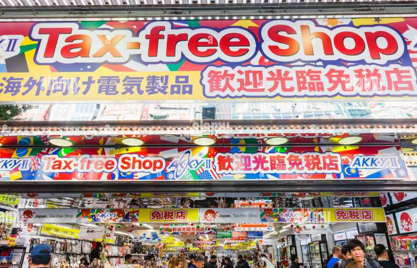
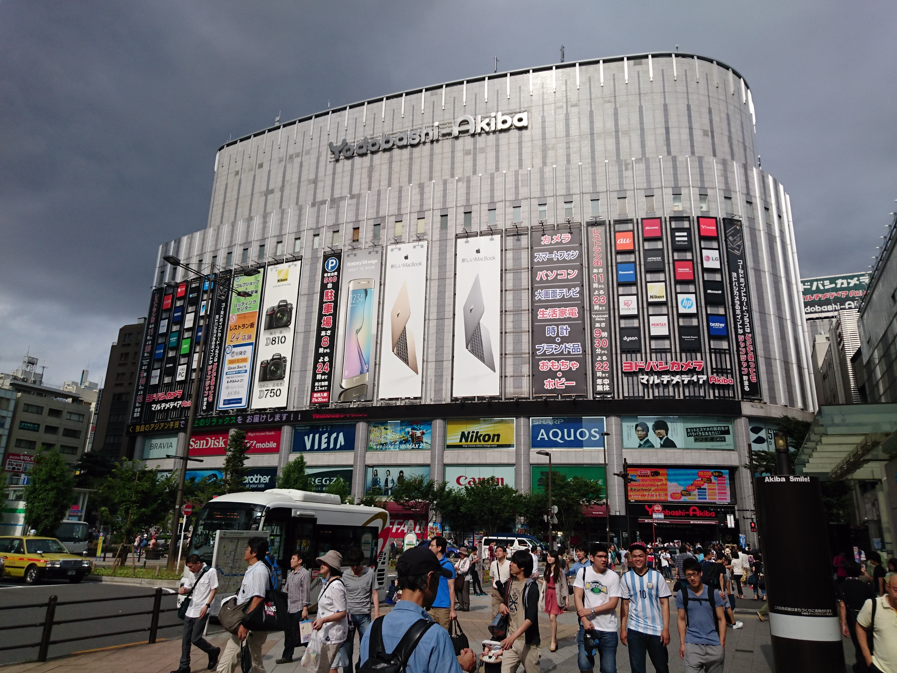
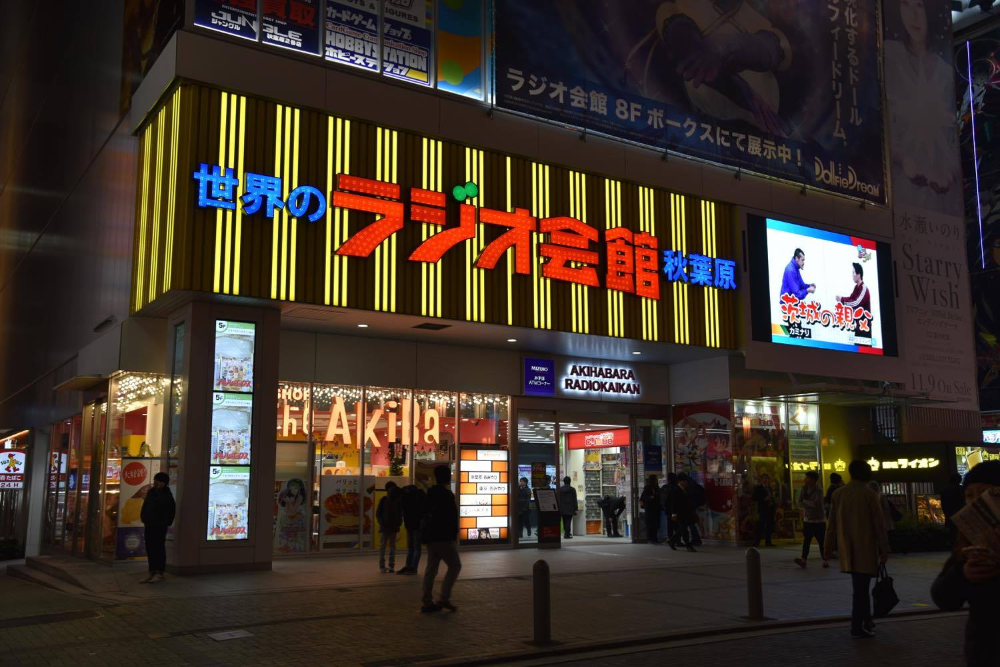
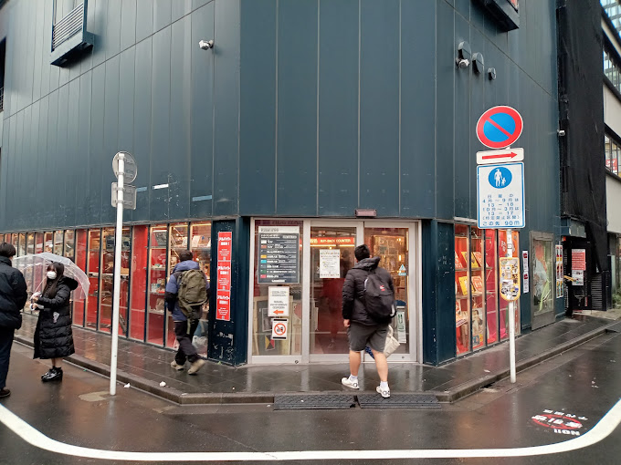

Akky
Akky se especializa en productos libres de impuestos y opera dos tiendas alrededor de la estación de Akihabara. Vende una variedad de equipos electrónicos para uso en el extranjero, incluidas cámaras, computadoras, televisores, reproductores de DVD y software.
Yodobashi Camera
Yodobashi Camera, el gigante de las tiendas de electrónica de descuento con sede en Shinjuku , abrió su enorme sucursal en Akihabara en 2005. A diferencia de la mayoría de las otras tiendas de electrónica, está ubicada en el lado este de la estación de Akihabara. Esta sucursal ofrece ventanilla única para computadoras, juegos, relojes y cámaras, y vende modelos internacionales y libres de impuestos.
Tiendas de Anime, figuras y más...
Radio kaikan
Radio Kaikan es uno de los lugares emblemáticos de Akihabara y cuenta con más de 30 tiendas que venden productos electrónicos y otros productos relacionados con el anime. Algunas de las tiendas famosas incluyen K-Books, Kaiyodo y Volks, que venden todo tipo de manga, modelos, juguetes, cromos, figuritas y objetos de colección. El edificio fue derribado en 2011, reconstruido y reabierto sus puertas en 2014 como un edificio más alto de diez pisos.
Mandarake
Mandarake opera una gran tienda en Akihabara. Especializado en productos usados, es un buen lugar para encontrar mangas raros, figuritas, muñecas, carteles, CD, juguetes y otros tipos de productos relacionados con el manga.
